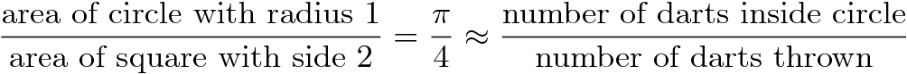

CSCI 150: Lab 3
Visualizations
Due:
10PM
on
Tuesday,
September 24th
The purpose of this lab is to:
- Introduce basic graphics
- Practice loops using graphics
- Program your first visualizations!
- Start using functions
Before you begin, please create a folder called lab03 inside your cs150 folder (for a refresher, here's how you did this on lab 02). This is where you should put all files made for this lab.
Part 1 - Picture This
sketchy.py: 12 points.
Implement a Design |
Create a program called sketchy.py that draws the picture you designed on your prelab using the picture module.
Using the picture moduleWe have provided you with a module picture that lets you draw pictures. To use it you need to:
|
Handin: |
Please handin what you have of your lab so far.
Important NoteWe would love to add some decoration to the two lab rooms, and your art work could really make the place feel more like home. If you do not want you art work printed and displayed in the labs, please indicate so in your Google Form submission. Otherwise, we will try to print it out and add it to the labs! |
Part 2 - Monte Carlo!
monte.py: 14 points
You probably remember bumping into that peculiar number π = 3.14159265..., right? It comes up when you're talking about circles and trigonometry, but also appears in a bunch unexpected places that seem to have little to do with either. As a refresher, Pi can be defined as the ratio of a circle's circumference (Π d) to its diameter (d). One interesting feature of Pi is that it's an irrational number, meaning it cannot be expressed as a fraction m/n where both m and n are integers; consequently, its decimal representation never ends or even repeats. In fact, we can make a stronger statement about Pi: it is a transcendental number, which means that there is no polynomial with rational coefficients of which Pi is a root. But, I digress.
Since ancient times, mathematicians have been fascinated with the study of Pi and it's various properties. Early approximations of Pi, such as 22/7 and 355/113 were accurate to 3 and 7 digits repsectively (the latter approximation was the best known for nearly a millenium). Currently, more than the first trillion (a million million) digits are known. There are many ways to estimate Pi — for example, you could draw as precise a circle as you can manage, measure its circumference C and diameter d, and then divide C/d; this should give you Pi. Alternatively, there is a geometry-based approach due to Archimedes. We'll investigate a third approach using what is called a Monte Carlo method.
Monte Carlo Method
When we say we're using a Monte Carlo method, we usually mean we're going to do a bunch of random trials and observe the fraction of those trials that have a certain property. In our case, we're going to be throwing darts into a square region, and computing the fraction of those darts that land within a circle inscribed inside that square. Each throw is a trial, and the property we are concerned with is whether or not the dart landed inside the circle or not.
Describe the Problem: |
Write a program called monte.py that computes an approximate value of Pi. Input: A number of trials n from the user. Ouput: An approximation to Pi using a Monte Carlo method with n trials. |
Understand the Problem: |
More precisely, we'll begin by (theoretically) constructing a target circle inscribed in a square. This is our dart board, and the target circle reaches all the way to the edge of the square. It might look something like the following:
The area of a square is the length of a side squared. Thus our square, with sides of length 2, has an area of 4. The area of a circle is Pi times the radius squared, so for a unit circle (with radius 1), the area is Pi. Therefore, the ratio of the area of our circle to the area of our square is precisely Pi/4. (That is, the circle takes up a Pi/4 portion of our dart board.) Since each dart lands at a random location in the square, the probability that any one dart lands within the circle should be exactly the fraction of the square taken up by the circle: Pi/4. Thus, if we repeat this experiment over and over again, we'd expect roughly a Pi/4 fraction of the darts to land in the circle. By counting up the fraction that actually land in the circle in our experiments, we've gotten a probabilistic estimate for Pi/4, or a quarter of Pi. If we just multiply that estimate by 4, we've got our approximation for Pi itself. Restating our discussion as a formula, we have  That is, if you throw lots of darts and keep track of the fraction that land inside the circle, multiplying this fraction by 4 should give you an approximate value for Pi. Of course, it is only an approximation: suppose (by some cosmic fluke) that all the darts thrown land near the upper left corner, outside of the circle. Then your approximation for Pi would be 0 (a rather weak estimate). However, as the number of trials increases, the likelihood that your estimate is good increases as well.A run of the program might appear as follows.
% python3 monte.py
This program calculates the value of Pi by
simulating the throwing of darts onto a round
target on a square background.
How many darts to throw? 1
The value of Pi after 1 iterations is 4.0
|
Design an Algorithm: |
Write pseudocode to approximate Pi via this dart-throwing method — you'll throw random darts at a 400-by-400 board, and calculate what fraction end up within the circle enclosed by that board. Try this on your own, and then confirm that your pseudocode looks something like the following:
|
Implement a Design: |
Translate your pseudocode into a Python program named monte.py. In order to implement your pseudocode, you'll need to "throw a dart." Each dart's position is specified by an (x,y) coordinate, so to "throw" a dart, you just need to randomly generate two values for each dart throw (one for x and one for y). Generating random numbers / Throwing random dartsPython has a module that will let you generate random numbers called random. To use it you need to:
Now that you have your dart throw, your next question should be: how do I know if I've hit the target? You'll do this by calculating the distance from the center of the circle to the dart and determining if it is within circle's radius and therefore inside the circle. We did this on the prelab, and to help, the distance formula is given by: So to find out how far a dart lands from the origin, we need a square root, which requires the math module. Math moduleYou can gain access to the math module by including the statement:As with the first program in this lab, you should add an input() statement so that the drawing of your Monte Carlo simulation remains up for the user to see. |
Test the Program: |
Try running your program with an increasing number of trials. Ideally, the more trials you have, the closer to the real value of Pi you get. You should expect that each run produces a slightly different value due to the fact that it is using a random number generator. |
Handin: |
Just another reminder to run the handin command to hand in your files. |

Part 3 - Walk Like an Egyptian
pyramid.py: 14 points
Describe the Problem |
Write a program called pyramid.py that draws a pyramid of bricks based on user input.
Input: An integer for the width of the image (width) and the height in bricks of the pyramid (n). Output: An image of a pyramid that is n bricks tall in a square canvas width wide (and thus width tall). |
Understand the Problem |
Here are three sample outputs for your reference. Notice that the pyramid doesn't necessarily fill the entire canvas to the right and to the top; if the canvas width is not evenly divisible by the number of bricks, then there will be extra blank space. (A question for you to ponder: why is there so much blank space in the third example? Seems like you could fit lots of extra bricks both to the right and up top...)
400 x 400, 3 bricks. 
400 x 400, 17 bricks. 
400 x 400, 123 bricks. 
|
Design an Algorithm |
Write pseudocode to draw the appropriate pyramid. The algorithm is:
For each row i of the pyramid
Of course, this leaves a lot of details out! The first question you should answer is "How many rows are there in the pyramid?" Hopefully it is clear that the answer here is n.
So we can rewrite the algorithm as:
For each row i from 0 to n-1 do
But drawing row i of the pyramid is a whole process in itself. To draw row i of the pyramid, we need to answer the following questions(which you answered on your prelab):
For each row i from 0 to n-1 do
If we were to implement this pseudocode, we would see that all the rows would be squished up against the left-hand side of the canvas... that is, we haven't taken into account that each row itself starts a little bit further to the right than the row below it. Thus, our next questions (which you answered on your prelab):
For each row i from 0 to n-1 do
|
Implement a Design |
Now that you have a detailed algorithm in pseudocode, translate it (bit by bit!) into a Python program named pyramid.py. Although your final program should get the width and number of bricks from the user, you may want to temporarily hard-code this values into your program (using the example values above, perhaps) for now because it will make testing easier for now.
Remember you can use the notes at the top of this page to help you remember how to create a new canvas and draw rectangles on it using the picture module. |
Implementation Notes |
|
Test the Program |
Try running the program with the examples given above as well as some others. Make sure you have gaps where you ought to, and that there aren't gaps where there shouldn't be gaps! Your pyramid should not be sloping to one side or floating in the middle. You shouldn't have some bricks that are larger than others. If it looks fishy, go back and examine your math equations, checking that the "integer division" is being used appropriately.
Don't forget to let the user input the width and number of bricks, if you were testing the program with hard-coded values. |
Handin |
Please handin your lab up to this point so that we have some portion of your code submitted. |
Part 4 - Wrap Up
As with every lab, your last job prior to submission is to complete a brief write-up by filling out a Google Form.
You now just need to electronically handin all your files. As a reminder
cd # changes to your home directory cd cs150 # goes to your cs150 folder handin # starts the handin program # class is 150 # assignment is 3 # file/directory is lab03 lshand # should show that you've handed in something
You can also specify the options to handin from the command line
cd ~/cs150 # goes to your cs150 folder handin -c 150 -a 3 lab03
File Checklist
You should have submitted the following files:
sketchy.py
monte.py
pyramid.py
picture.py (you shouldn't have touched this, but it makes grading easier)
C. Taylor, A. Eck, A. Sharp, T. Wexler, M. Davis, and S. Zheng.